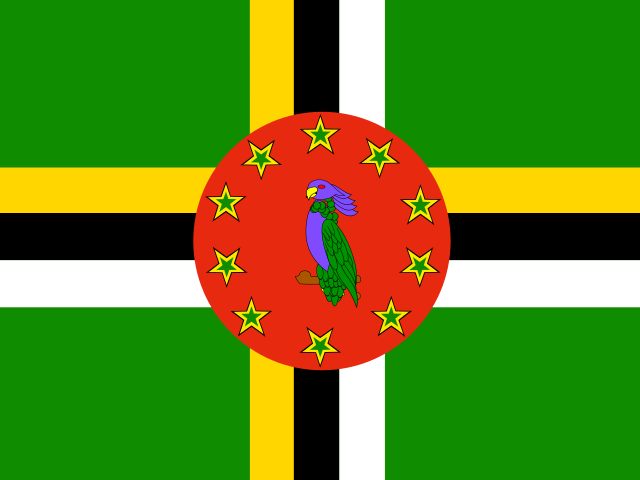

Countries › North America
Dominica
Where Dominica stands out
▲ MOST
5th Guyana6.83
Guyana6.83
6thDominica6.46
7th Bosnia and Herzegovina6.45
Bosnia and Herzegovina6.45
6th of 159 · World Bank Food Prices for Nutrition, 2024
▲ MOST
7thGuyana87.2%
8thDominica76.8%
9thGuinea-Bissau75.4%
8th of 192 · Food and Agriculture Organization (FAO) Global Forest Resources Assessment 2025, 2020
▲ MOST
7th Rwanda22.8%
Rwanda22.8%
8thDominica22.6%
9th Malaysia21.5%
Malaysia21.5%
8th of 189 · FAO, via World Bank, World Development Indicators (WDI), 2023
▲ MOST
10th Comoros32.5%
Comoros32.5%
11thDominica30.8%
12th Saint Vincent and the Grenadines29.5%
Saint Vincent and the Grenadines29.5%
11th of 193 · United Nations Department of Economic and Social Affairs (UN DESA) International Migrant Stock 2024, 2020
Size, sea and borders
751 square kilometres (km²)174th of 195
CoastlineCentral Intelligence Agency (CIA) World Factbook, 2024 edition, 2024 · web.archive.org (cia.gov)
148 kilometres (km)132nd of 193
Coastline for its sizeCIA World Factbook and World Bank (derived), 2024 · web.archive.org (cia.gov)
197,071 metres (m) per 1,000 km²24th of 192
Number of land bordersGeoNames, 2026-08 · download.geonames.org
0158th of 195, tied with 37
Land and height
1,447 m136th of 194, tied with 1
Rainfall a yearFAO, via World Bank, WDI, 2022 · data.worldbank.org
2,083 millimetres (mm)28th of 179
76.8% of land8th of 192
Orchards and plantationsFAO, via World Bank, WDI, 2023 · data.worldbank.org
22.6% of land8th of 189
People
66,510 people186th of 195
Population densityWorld Bank, WDI, 2023 · data.worldbank.org
88.6 people per km²96th of 192
35.6 years64th of 195
71.1 years125th of 195
Years longer women live than menUN World Population Prospects 2024, 2023 · population.un.org
6.347th of 195
Under-5 mortalityUnited Nations Inter-agency Group for Child Mortality Estimation (UN IGME), via World Bank, WDI, 2024 · data.worldbank.org
35.7 per 1,000 births52nd of 193
Share of people born abroadUN DESA International Migrant Stock 2024, 2020 · un.org
12.3%51st of 194
Share of its people living abroadUN DESA International Migrant Stock 2024, 2020 · un.org
30.8%11th of 193
Food, power and travel
A day's healthy foodWorld Bank Food Prices for Nutrition, 2024 · datacatalog.worldbank.org
6.46 dollars a person6th of 159
2178th of 189, tied with 6
Road per 100 km² of landCIA World Factbook and World Bank (derived), 2024 · web.archive.org (cia.gov)
201 km21st of 187
Football and chess
Football internationals played, all timeInternational football results (martj42), 2026 · github.com
215158th of 193
See all 101 facts about Dominica
Showing 20 highlights for Dominica. Rank counts from the highest value among the countries that have data: 1st is the most. Ties share a rank. Data version 91, 22 November 2026.
Sort Dominica against four others
The game has figures for Dominica on 138 of its 190 questions.
The same game for Android and iOS. It launches on 10 December 2026.
Out now.